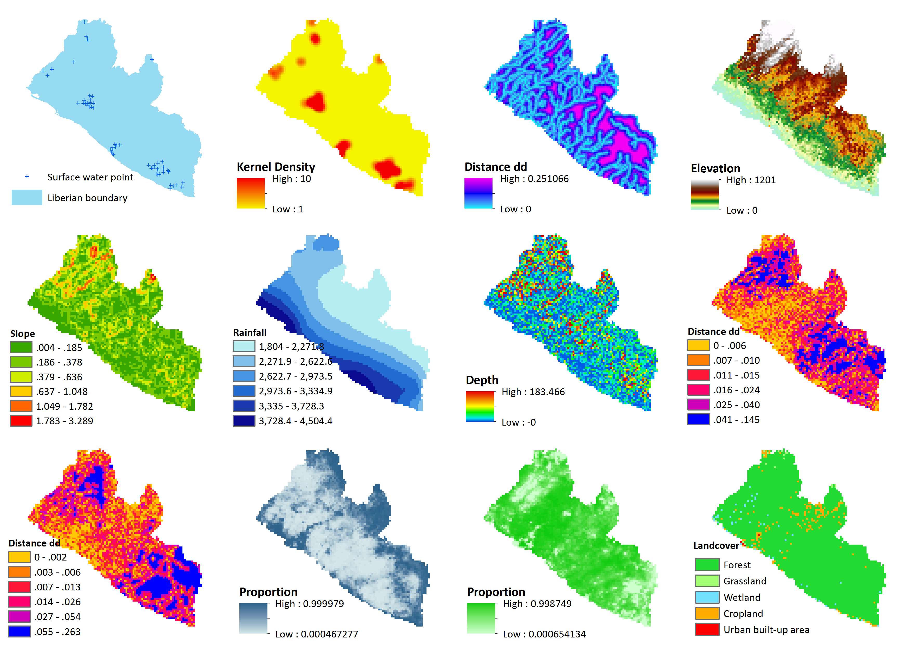

|
| Home | About | Water Mapping | Inequality | Downloads | Contact |
Combining water point data and machine learning to predict the potential geographic distribution of disadvantaged drinking-water accessAlthough SDG monitoring on drinking-water progress is often based on national level indicators, sub-nationally and geospatially disaggregated indicators may become increasingly important as they could effectively reveal inequalities in services between different geographic locations and population groups. As more recent concerns are raised about issues such as water quality, functionality of facility, and continuity of service, it may also become increasingly important to disaggregate data by specific type of water service. As more geospatial data sources become available with the transition from the MDGs to the SDGs, predicting the potential spatial distribution of specific type(s) of drinking-water source using machine learning method becomes possible. DHS modelled surfaces as one of such novel data could potentially be the important sources of predictive covariates in modelling the potential distribution of specific type(s) of drinking-water access or service. |
CASE STUDY: Mapping the potential geographic distribution of surface water drinking sources in LiberiaAchieving universal and equitable access to safe and affordable drinking water for all requires evidence-based assessments to identify the disadvantaged areas and prioritise those with the most needs accordingly. To facilitate drinking water infrastructure development to deliver safe and sustainable water services for all, it is necessary to locate the people still using disadvantaged water services across the country. Surface water at the bottom of WHO/UNICEF Joint Monitoring Programme (JMP)’s water ladder refers to drinking water directly from open sources such as a river, stream, lake, dam, pond, canal or irrigation channel. Fetching water from open sources may pick up contaminants and pathogens; without proper treatment before use, it may cause serious health effects. Although conventional geospatial datasets concerning drinking water services generally contain comparatively limited information on surface water sources, more newly released datasets combining machine learning predictive modelling methods makes it possible to predict the potential spatial distribution of specific types of disadvantaged water service such as surface water.This study uses a novel machine learning algorithm named maximum entropy (MaxEnt) to predict the potential spatial distribution of surface water drinking sources in Liberia. Surface water point data derived from the Water Point Exchange are employed as observed occurrence sample of surface water; whilst data indicating factors that may be potentially important determinants of the spatial distribution of surface water drinking sources are used as predictive covariates for the MaxEnt modelling. Data:Surface water point: Water Point Exchange (https://www.waterpointdata.org/water-point-data)Elevation and slope: ASTER GDEM Version 2 (USGS Earth Explorer: https://earthexplorer.usgs.gov/) Land cover: MODIS Land Cover Type (MCD12Q1) v5.1 (Global Land Cover Facility (GLCF): http://www.landcover.org/data/lc/) Inland water: Digital Chart of the World (DCW) (DIVA-GIS: http://www.diva-gis.org/gdata) Rainfall: WorldClim Clobal Climate Data version 1.4 (http://worldclim.org/current) Villages: Open Street Map (OSM) (http://download.geofabrik.de/africa/liberia.html) Roads: Open Street Map (OSM) (http://download.geofabrik.de/africa/liberia.html) Depth to groundwater: Equilibrium Water Table Africa Model version 2 (Global Water Scarcity Information Service (GLOWASIS) https://glowasis.deltares.nl/thredds/catalog/opendap/opendap/Equilibrium_Water_Table/catalog.html) Improved water coverage: DHS modelled surfaces (http://spatialdata.dhsprogram.com/modeled-surfaces/#countryId=LB) Open defecation: DHS modelled surfaces (http://spatialdata.dhsprogram.com/modeled-surfaces/#countryId=LB) Preprocessed 'ready-for-use' data for this case study can be downloaded from here Model inputs:Result:The following maps show the 5km resolution predicted potential spatial distribution of surface water sources in Liberia:
 Predictive covariates:In this example, we identified 10 predictive covariates that may be important determinants of the spatial distributions of drinking surface water sources, considering the accessibility to surface water sources, potential demand (i.e. residents do not have potential access to other better water sources) and preference (e.g. due to affordability), etc. Surely, this is a simple model for illustration purposes. Sampling bias:Sampling bias. Results:Results. |